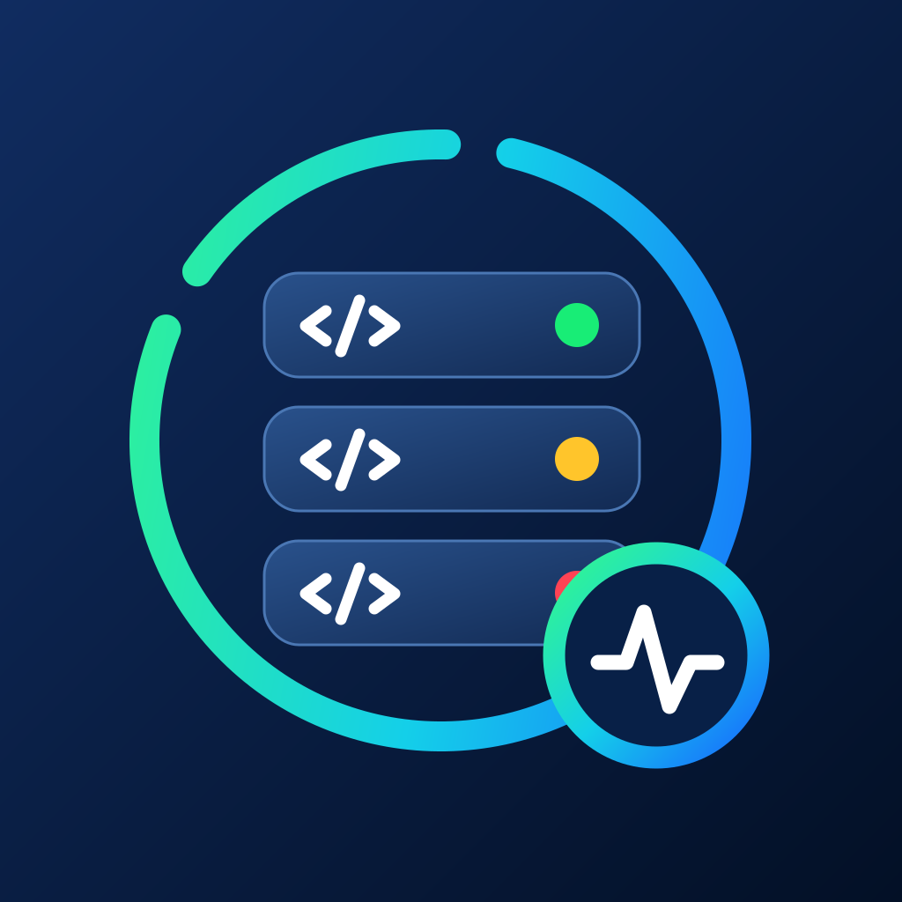

See the whole signal.
Browse developer services in one list, with the latest status and provider update right where you need them.

Dev Status CheckNOW AVAILABLE FREE ON THE APP STORE
Dev Status Check brings the status of the developer services you depend on into one focused view—so you can get context fast and keep building.
Available for
iPhone, iPad & Mac
Free forever. No account required.
YOUR STATUS, WITHOUT THE TAB SWITCHING
From a quick check between commits to a heads-up when an essential service changes state, Dev Status Check keeps the information clear and close at hand.
Browse developer services in one list, with the latest status and provider update right where you need them.
Subscribe only to the services you rely on. When their status changes, Dev Status Check can let you know locally.
Widgets surface your subscribed services, prioritizing issues and maintenance so the most important information does not get buried.
PRIVATE BY DESIGN
There are no accounts, analytics, trackers, or third-party SDKs. Dev Status Check reads the public status information from the providers you choose—nothing more.
Read the privacy policyREADY WHEN YOUR STACK ISN’T